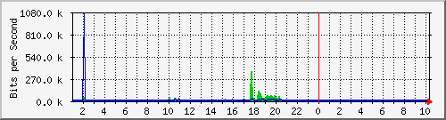

Traffic Analysis for -- 192.168.10.53
上次統計更新時間: 2011 年 二月 10 日 星期四 10:22,
設備名稱 'NBADs'，已運作時間(UPTIME): 44 days, 0:24:35.
每日 圖表 (5 分鐘 平均)

|
最大 |
平均 |
目前 |
| 流入 |
361.7 kb/秒 (0.0%) |
12.1 kb/秒 (0.0%) |
3976.0 b/秒 (0.0%) |
| 流出 |
1049.2 kb/秒 (0.1%) |
6376.0 b/秒 (0.0%) |
168.0 b/秒 (0.0%) |